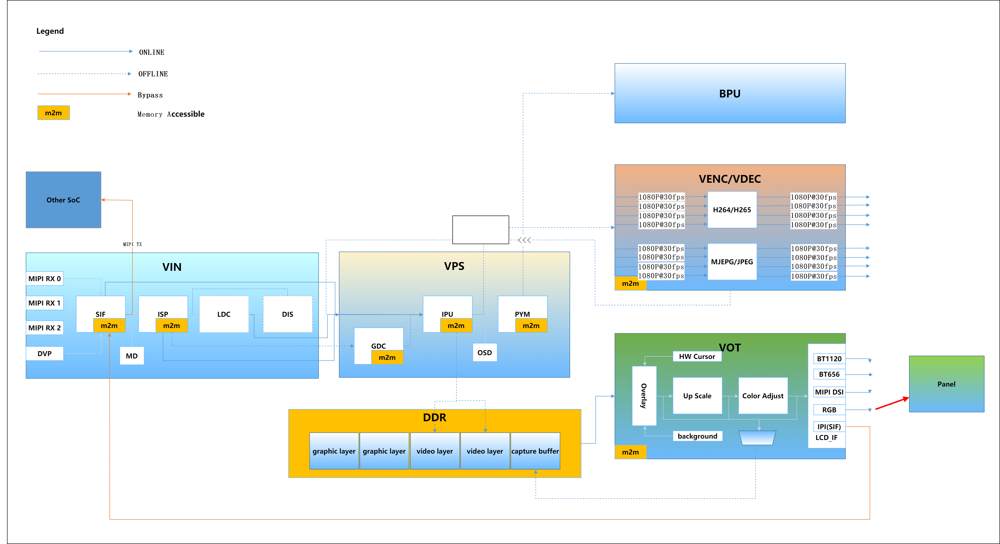

5.1. 系统概述
5.1.1. 概述
地平线提供的多媒体接口包含系统控制、视频输入、视频处理（ISP图像处理器、裁剪、缩放、旋转、矫正）、H.264/H.265/JPEG/MJPEG编码和解码、视频输出显示等功能，接口做了抽象化的封装，支持应用快速进行软件开发。
5.1.2. 多媒体系统架构
地平线多媒体处理的主要内部处理流程如下图所示，主要分为视频输入（ VIN ）、视频处理（ VPS ）、视频编码（ VENC ）、视频解码（ VDEC ）、视频输出 (VOT) 、区域处理（ REGION ）、AI算法推理（BPU）等模块。

5.1.3. 术语约定
| 缩写 | 全称 | 解释 |
|---|---|---|
| VIN | Video IN | 包含视频处理接入、图像信号处理器、畸变矫正和防抖处理，接收来自sensor的数据并处理，也可以直接接收内存中的图像数据 |
| VPS | Video Process System | 包含图像旋转、图像裁剪、缩放功能，可对同一种输入源输出不同分辨率的图像。输入源可以是VIN模块，也可以是内存中的图像数据 |
| VENC | Video Encode | VENC编码模块支持H.264/H.265/JPEG/MJPEG编码，VPS模块处理后的数据可通过编码模块按不同协议编码做码流输出 |
| VDEC | Video Decode | VDEC解码模块支持H.264/H.265/JPEG/MJPEG解码，可对已编码的码流进行解码，交给VPS模块做进一步处理，输出到VOT模块进行显示 |
| VPU | Video Processing Unit | 视频处理单元，完成视频的编解码功能 |
| JPU | JPEG Processing Unit | JPEG 图片处理单元，完成JPEG、MJPEG的编解码功能 |
| VOT | Video Output | 视频输出模块接收VPS、VDEC的图像数据，可输出到显示设备 |
| VIO | Video IN/OUT | 视频输入、输出，包括VIN和VOT模块 |
| MIPI | Mobile Industry Processor Interface | 移动产业处理器接口 |
| CSI | Camera Serial Interface | 相机串行接口。CSI接口与DSI接口同属一门，都是MIPI（移动产业处理器接口联盟）制定的一种接口规范 |
| DVP | Digital Video Port | 数字视频端口 |
| SIF | Sensor Interface | sensor接口，用来接收mipi、dvp或者内存的图像数据 |
| ISP | Image Signal Processor | 图像信号处理器，完成图像的效果调校 |
| LDC | Lens Distortion Correction | 镜头畸变校正 |
| DIS | Digital Image Stabilizer | 数字图像稳定 |
| DWE | Dewarp Engine | 畸变矫正引擎，主要是将LDC和DIS集成在一起，包括LDC的畸变矫正和DIS的统计结果 |
| IPU | Image Process Unit | 图像信号处理单元，支持图像的旋转、图像裁剪、缩放功能 |
| GDC | Geometrical Distortion Correction | 几何畸变矫正 |
| PYM | Pyramid | 图像金字塔 |
| OSD | On Screen Display | 视频图像叠层显示 |
| BPU | Brain Process Unit | 地平线机器人自主研发的可编程AI加速引擎 |
| HAL | Hardware Abstraction Layer | 硬件抽象层 |
| FW | Firmware | 固件 |
| Sensor | Sensor | 如不做特别说明，特指CMOS图像传感器 |